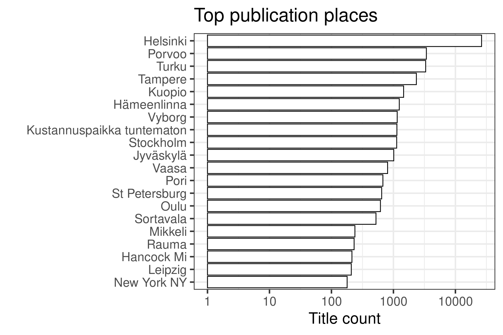
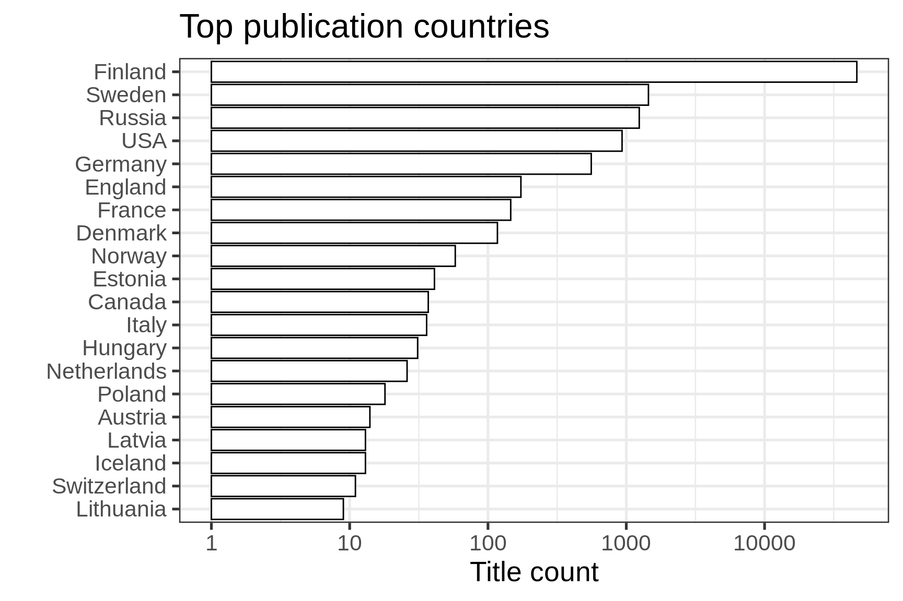
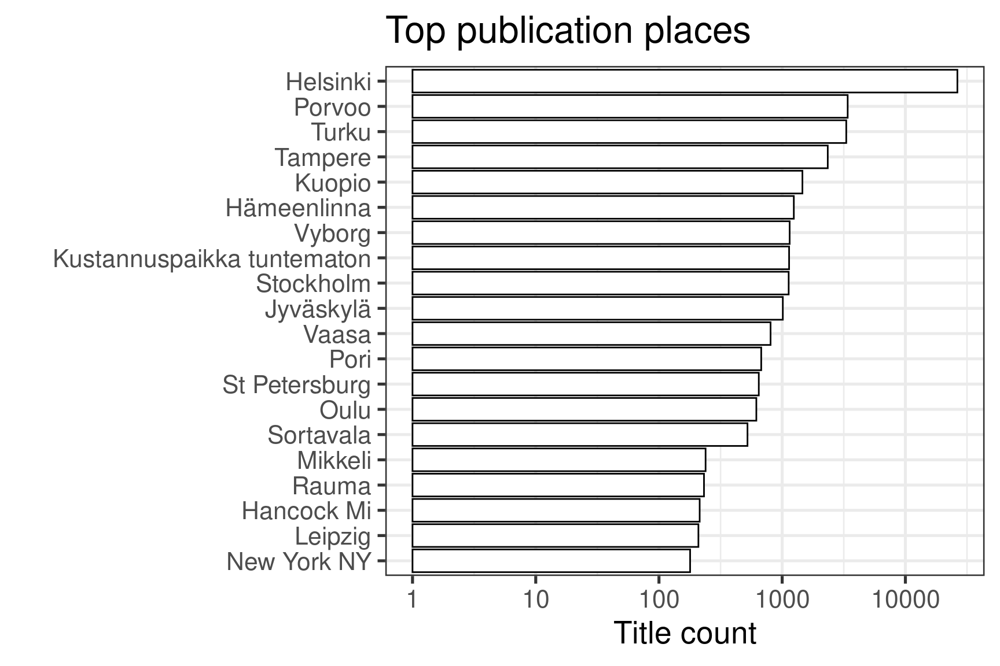
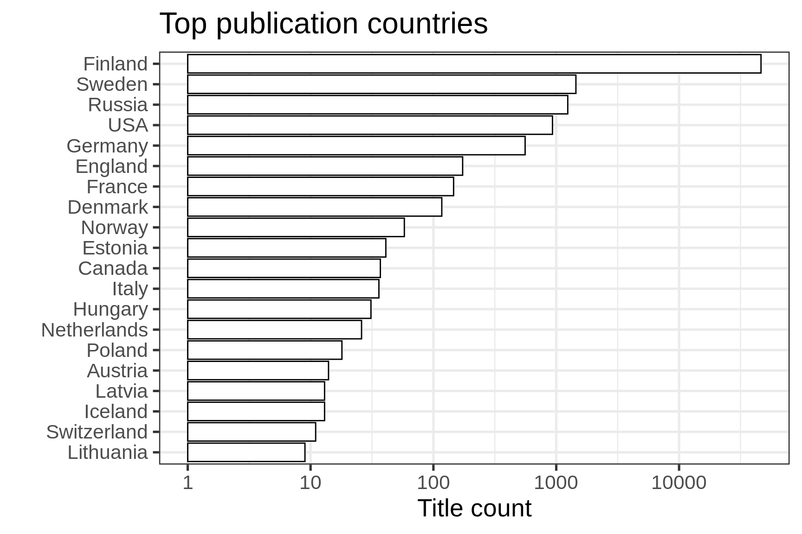

Top-20 publication places are shown together with the number of documents.


Warning: `data_frame()` was deprecated in tibble 1.1.0.
ℹ Please use `tibble()` instead.
ℹ The deprecated feature was likely used in the fennica package.
Please report the issue at <https://github.com/comhis/fennica/issues>.| Country | Documents (n) | Fraction (%) |
|---|---|---|
| Finland | 59639 | 82.9 |
| Sweden | 5106 | 7.1 |
| Russia | 1227 | 1.7 |
| USA | 869 | 1.2 |
| Germany | 775 | 1.1 |
| Estonia | 287 | 0.4 |